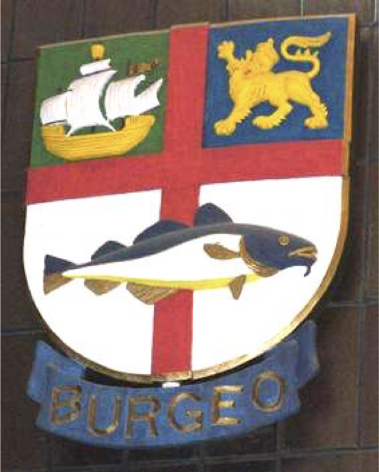

-1-MasterItem.svg)
Stories of Westminster United Church & its People / Page
106
Shortly into the fall Max developed tuberculosis and was able to catch the last
steamer out before
winter freeze-up. La Scie now had no minister.
Ernest, was a Methodist. However, Methodist Church rules required that he be ‘converted’ if he was
to be considered part of the Methodist congregation at La Scie and not an
outsider.So, at a prayer
meeting being conducted by his friend one evening … Ernest had stood up, walked to the communion
rail, knelt down and “made a decision for Christ.” “I had made my declaration that to my best
understanding and ability I intended to follow Christ.” He soon was pressured to take the place
of the fill-in ministers who had been working there.
He accepted the challenge. He found his first sermon in an old copy of
The Family Herald and Weekly
Star
.” Ernest regarded that publication second only to Eaton’s catalog in the outhouses of Northern
Newfoundland. His efforts as a sermonizer eventually improved to the point where
he was writing
his own homilies.
For the last two incredible months of his stay in La Scie Ernest, at age 17, was
senior teacher of the
school and minister ( thus his own boss) in the village church. Only in outport
NFLD we might say,
but Ernest's story doesn’t end there.
Ernest’s father, Rev. Charles Howse, was Chairman of The District where
his parish, Grand Bank, lay. Part of Charles’s work was to find young
Probationers to serve congregations in outlying areas that couldn’t afford
regular clergy. And Charles had a problem. The Probationer who had
been serving at Burgeo left to attend university in Ontario.
The nature of the problem for Charles, was that Burgeo was not just one
congregation but a Mission field of three congregations, two on remote
islands along 50 miles of rugged coastline. Charles needed a person
who could not only preach but could handle a boat in very treacherous
waters. His son was the answer.
Table
of Contents
Rev. Ernest Marshall Howse
